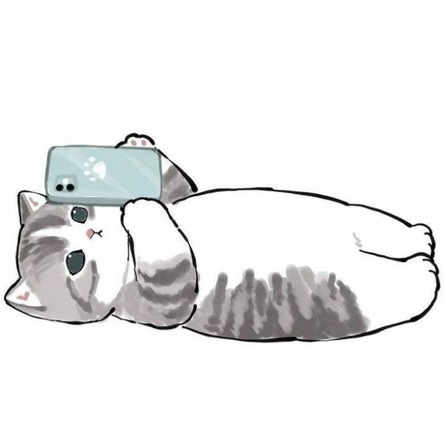
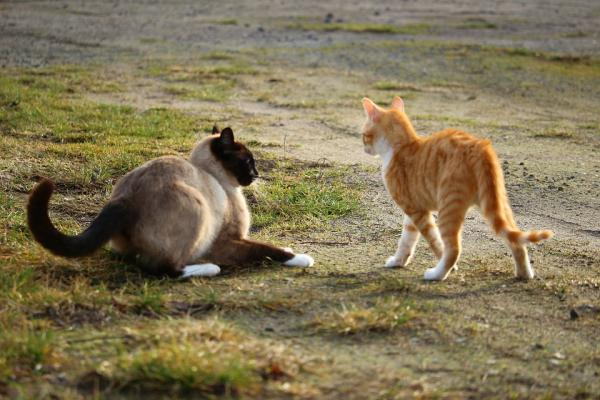

ENCUENTRO DE CASUALIDAD Un dia dos michis se encontraban de casualidad sin buscarse, y un dia decidieron quedar el mismo dia y caminar sin rumbo haber si era casualidad o destino, caminaron sin rumbo y ambos pensaron en tardarse para buscar al otro michi, apenas llegaron al mismo sitio se encontraron sorprendidos por el poco tiempo que habia pasado y se dieron cuenta que era destino.